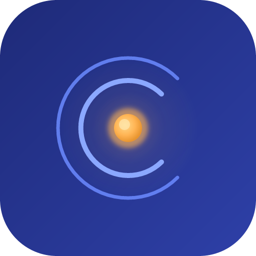

', '
', '
click
', '
', '正常文字', ]; /** Mermaid flowchart token 序列（用于 TC-VIZ-001/002/004）。 */ const MERMAID_TOKENS = [ '好的，', '这是一个流程图：', '\n\n```mermaid\n', 'flowchart TD\n', ' A[开始] --> B[处理]\n', ' B --> C{判断}\n', ' C -->|是| D[结束]\n', ' C -->|否| B\n', '```\n', ]; /** Mermaid 语法错误 token 序列（用于 TC-VIZ-003）。 */ const MERMAID_INVALID_TOKENS = [ '好的，', '这是一个有语法错误的图表：', '\n\n```mermaid\n', 'flowchart TD\n', ' A --> --> B\n', // 双箭头语法错误 ' B[未闭合节点\n', // 未闭合方括号 '```\n', ]; /** Mermaid XSS 注入 token 序列（用于 TC-VIZ-006 安全测试）。 */ const MERMAID_XSS_TOKENS = [ '好的，', '这是一个含 XSS 载荷的图表：', '\n\n```mermaid\n', 'flowchart TD\n', ' A[""] --> B[正常]\n', '```\n', ]; /** KaTeX 行内公式 token 序列（用于 TC-VIZ-007）。 */ const KATEX_INLINE_TOKENS = [ '好的，', '质能方程为 $E = mc^2$，', '其中 $c$ 是光速，', '水的化学式 $\\ce{H2O}$。', ]; /** KaTeX 块级公式 token 序列（用于 TC-VIZ-008）。 */ const KATEX_BLOCK_TOKENS = [ '好的，', '积分公式如下：', '\n\n$\\int_0^1 f(x)\\,dx$\n\n', '这就是定积分的定义。', ]; /** KaTeX 语法错误 token 序列（用于 TC-VIZ-009）。 */ const KATEX_INVALID_TOKENS = [ '好的，', '这个公式有语法错误：', '$\\undefinedcmd

EchoMind
API Key
Base URL
Model
代理 URL（可选）
Cancel Import
Send
Stop
Esc
Esc
数据库异常
数据存储可能已损坏。建议从备份恢复或重置数据目录。
打开数据目录
知道了
0/50
.md
.txt
.pdf
0
PRO
0%
— / —
PRO
English
简体中文
4096
0
0
0
0
0
tokens
all-MiniLM-L6-v2 (384d · EN)
bge-small-zh-v1.5 (512d · ZH)
e5-small-v2 (384d · Multi)
DEBUG
INFO
WARN
ERROR
⚠️